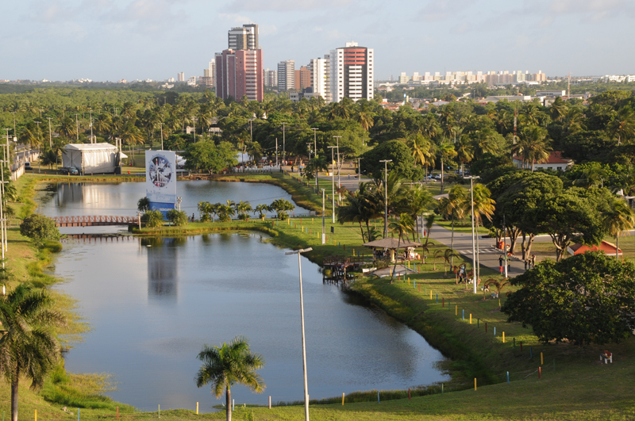

<ion-header [translucent]="true">
  <ion-toolbar color="secondary">
    <ion-title>
      Parques
    </ion-title>
  </ion-toolbar>
</ion-header>

<ion-content [fullscreen]="true">
  <ion-list>
    <ion-item [routerLink]="['/parque-da-sementeira']">
      <ion-thumbnail slot="start">
        
      </ion-thumbnail>
      <ion-label>
        <ion-text color="tertiary">
          <h2>Parque da Sementeira</h2>
        </ion-text>
        <ion-badge color="danger" class="badge-below">Aracaju</ion-badge>
      </ion-label>
      <ion-icon name="chevron-forward-outline" slot="end"></ion-icon>
    </ion-item>
  </ion-list>
</ion-content>
